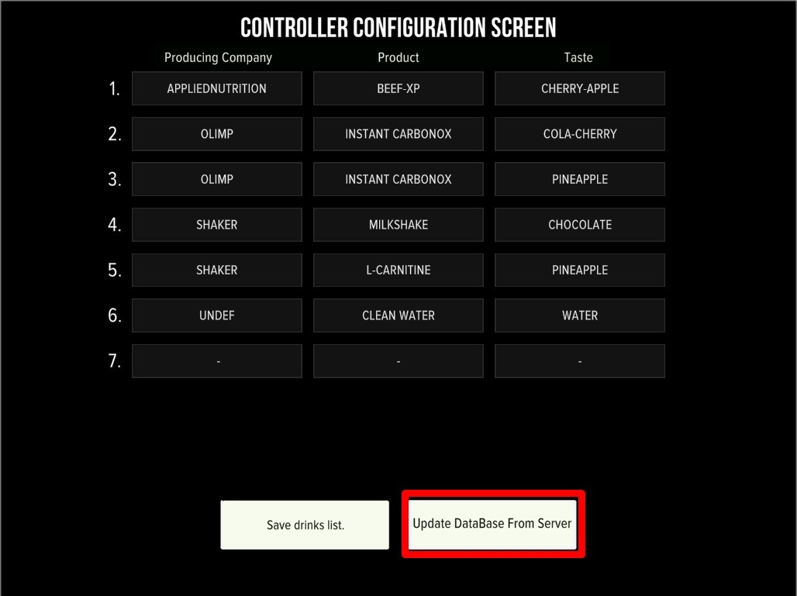

Нажмите Update Database From Server и дождитесь загрузки.
Назначьте вкус на нужный слот → Save.
Controller Reboot.
Почему вкус может не появиться
Не нажали Update Database From Server — без этого локальный каталог не обновляется.
Не сделали Controller Reboot после Save.
Продукт ещё не зарегистрирован у нас — пришлите фото банки и состава (см. «Как завести свой порошок / вкус»).
Не совпала категория/вид напитка — проверьте, что выбрана правильная категория.
Если после Update Database и перезагрузки вкус всё равно не виден или показан как «taste.xxx» / белым квадратом — напишите нам, поправим на своей стороне.

Кнопка «Update DataBase From Server» на экране конфигурации.
Draft / черновик — для внутреннего ревью перед публикацией. iShaker USA.